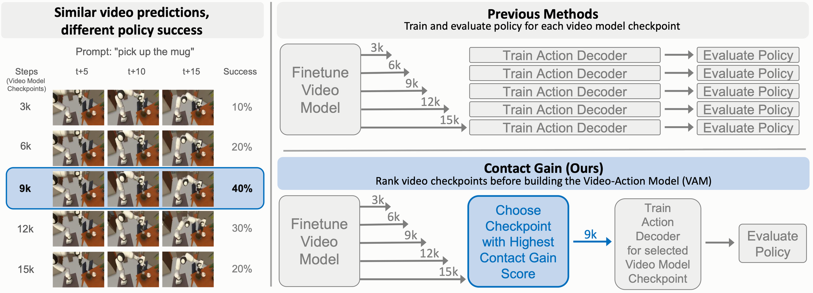
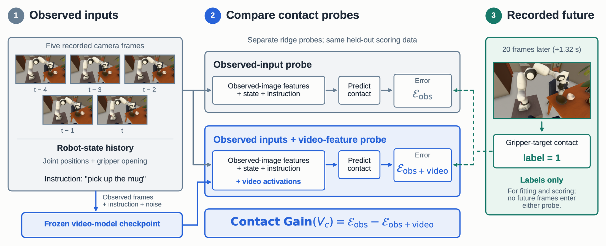
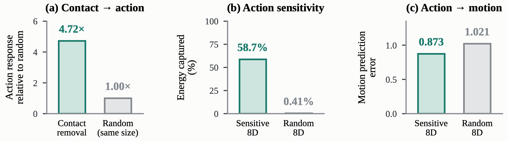

Abstract
Recent Video-Action Models (VAMs) build robot policies on top of pretrained generative video backbones, using their internal representations as predictive features for action decoding. However, selecting which video model checkpoint to use remains expensive: each candidate typically requires training a separate Inverse Dynamics Model (IDM) and evaluating the resulting policy, while visual fidelity alone provides little indication of downstream control quality. We contend that the usefulness of a video model for control is determined not by how realistic its predictions appear, but by what interaction-relevant information its internal representations make accessible to the action decoder. We therefore introduce Contact Gain, an offline metric that measures how much a video model’s internal activations improve prediction of future robot–object contact beyond what can already be inferred from the observed history. Across dense checkpoint sweeps of two generative video models on two simulated manipulation benchmarks, MolmoSpaces and RoboCasa, we demonstrate that Contact Gain consistently tracks downstream robot success and selects a highest-performing checkpoint in each sweep, while conventional video-quality metrics fail to reliably identify the best checkpoints. We further show that this interaction information is not merely decodable: perturbing contact-associated activations produces substantially larger changes in predicted actions than matched random perturbations.
Contact Gain
We hypothesize that a video representation is useful for control when it makes the consequences of physical interaction readily accessible to the action decoder. Contact Gain tests this hypothesis. Two ridge probes predict future contact (gripper and fingers with the target object, and the object with its goal receptacle) 10, 20 and 40 frames ahead. Both see the same observed inputs: the observed camera frames, robot-state history and the instruction. Only the second also receives frozen activations from the candidate video-model checkpoint.
Here is a variance-normalized squared error on held-out scoring data. A positive score means the checkpoint's activations carry information about future interaction beyond what the observed history already provides. Scoring a checkpoint needs only frozen forward passes on a few hundred to a thousand offline windows (320 on MolmoSpaces, 1,000 on RoboCasa) and two ridge probes, with no action-decoder training and no policy rollouts.


Contact Gain tracks downstream robot success
We fine-tune Cosmos Predict-2.5-2B and Wan-2.2-TI2V-5B on two simulated manipulation benchmarks. On MolmoSpaces (250 trajectories, five object categories) we keep ten checkpoints per model (3K–30K updates); on RoboCasa (500 episodes over five kitchen pick-and-place tasks) we keep 14 (3K–42K). For every checkpoint we train a separate action decoder following mimic-video and measure task success in simulation (125–250 rollouts per checkpoint), then ask which offline score would have picked the best checkpoint.
Explore the checkpoint sweeps
Each point is one fine-tuned checkpoint. Choose the score used for selection: the ringed point is the checkpoint that score picks, and the horizontal line marks the best observed success. The x-axis is oriented so the preferred direction is always to the right (lower FVD and losses are preferred). Axes are scaled per panel. Each panel's ρ is the paper's value from unrounded scores; MolmoSpaces points use the rounded values printed in the paper, so a few of them tie.
Show per-checkpoint values as a table
Contact Gain's top-ranked checkpoint is a highest-success policy in all four sweeps, and FVD and validation loss never pick the best one. Two caveats on RoboCasa: success largely increases with fine-tuning, so simply taking the latest checkpoint (42K) would also pick the best checkpoint in both sweeps; and the pick depends on the action-decoder protocol. With final-iteration decoders for Cosmos, Contact Gain's selection (42K, 26.4%) is 2.0 points below the best checkpoint (33K, 28.4%). Training loss (ρ = 0.968) and LogME (0.913) correlate marginally better than Contact Gain (0.911) on RoboCasa Cosmos.
Contact-associated activations influence predicted actions
A probe can read contact from activations the decoder ignores, so we test whether the fixed decoder responds to them. On the MolmoSpaces 21K Cosmos policy, we remove a single contact-predictive direction from the frozen activations, a direction found from contact labels alone with no action gradients or success, and compare against random removals of the same size.


Limitations
- Contact Gain is supervised: it depends on the representation layer, feature processing, probe family and labelled trajectories, and its absolute values are not comparable across model families. It is a within-model checkpoint score.
- The interventions are on one MolmoSpaces Cosmos checkpoint and establish effects on predicted actions, not on closed-loop success.
- On RoboCasa, success largely increases with fine-tuning, so the latest checkpoint is a strong baseline there, and which checkpoint is best depends on which action-decoder iteration is evaluated.
Citation
@article{contactgain2026,
title = {Do Better Videos Mean Better Robot Control?
Offline Checkpoint Selection for Video-Action Models},
author = {Anonymous Authors},
journal = {arXiv preprint},
year = {2026}
}